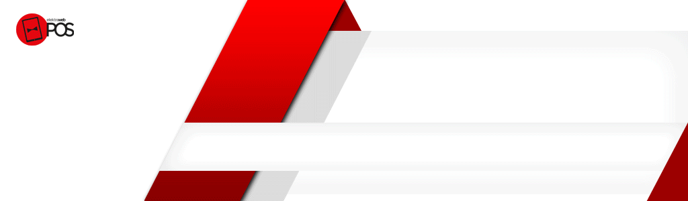
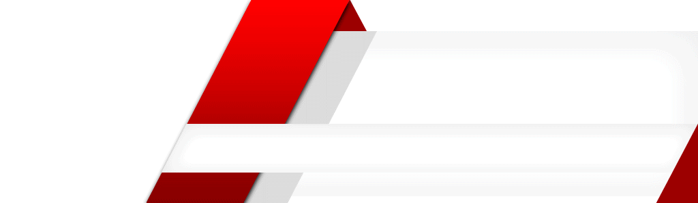
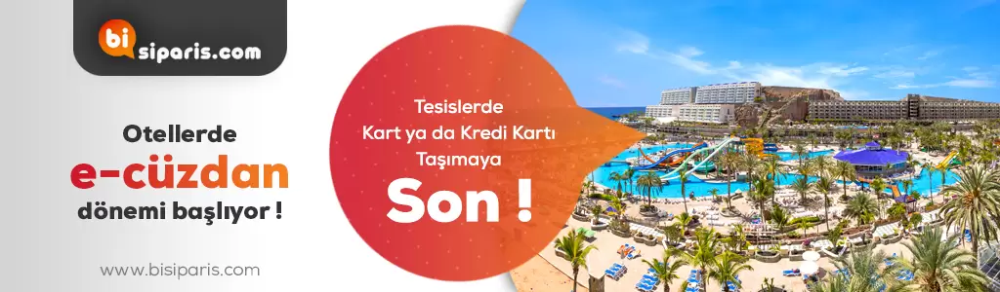
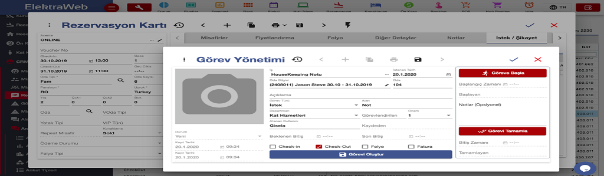

Elektraweb Web Tabanlı Otel Programı
sayesinde rezervasyon, resepsiyon, housekeeping, fatura, folyo, channel manager, online
rezervasyon, emniyet
kimlik bildirimi gibi işlemleri yapabilirsiniz.
“Günlük Durum Ekranı” ile otelinizin günlük durumunu bu ekran üzerinden kontrol edebilir ayrıca
otelinizin
doluluk, gelir, forecast, rezervasyonlar gibi bilgileri hem grafik hem de liste haline
ulaşabilirsiniz.
Detaylı bilgi için: Elektraweb

Elektraweb POS Restoran Yönetim Programı ile restoranınızı her yerden yönetebilir,
istediğiniz yöntemle
hesabı alabilirsiniz. Masalarınızın güncel durumunu hem bilgisayarınızdan hem de telefonunuzdan
takip edebilirsiniz.
Ayrıca restorantınıza özgü "Digital Menü" yaratabilirsiniz.
Elektraweb bulutta çalışan otel yönetim sistemi sayesinde sıfır yatırım maliyet ile
işlemlerinizi
gerçekleştirebilirsiniz.
Detaylı bilgi için: Elektraweb
işletmenizdeki stok hareketlerini görmenizi, alış ve satışlarınızı planlayabilmenizi,
müşterilerinizin tüketim eğilimlerini tahmin etmenizi, personelinizin stokları kullanma şeklini
analiz edebilmenizi ve nihayetinde hedefleriniz için öngörüde bulunabilmenizi sağlar.
Detaylı bilgi için: Elektraweb
Otellerin ihtiyaçlarına göre özelleştirilmiş kapsamlı bir web tabanlı muhasebe yönetim sistemidir.
Ön muhasebe ve genel
muhasebe dışında işletmenin idari süreçlerinin tamamını yönetebilecek satınalma, demirbaş, personel,
stok ve satış
yönetimi modüllerine de sahiptir. Tamamen modüler olarak tasarlandığından ihtiyaç doğrultusunda
istenilen modüller
sonradan da eklenebilir
Detaylı bilgi için: Elektraweb
Otelinizin “Dijital Dönüşüm” sürecinizi Elektra ile yönetebilirsiniz.
e-Fatura, e-Defter ve e-Arşiv modülümüz ile finansal operasyonlarınızı yasaya uygun olarak
kolaylıkla
gerçekleştirebilirsiniz.
Detaylı bilgi için: Elektraweb
Elektraweb Satınalma Yönetimi,
departman talebinden siparişin teslimatına kadar ki tüm operasyonu takip ederek yönetilmesini
sağlayan modüldür.
Detaylı bilgi için: Elektraweb
Elektraweb Demirbaş Programı
barkotlu el bilgisayarı ile sayım yapabilen, ürünlerin özelliklerine ve yerlerine göre barkod
basabilen, garanti ve
servis anlaşmalarını takip edebilen ve muhasebe ile entegre çalışan bir modüldür.
Detaylı bilgi için: Elektraweb
Daha İyi Planlama, Daha İyi Yönetim ve Daha Yüksek Performans..
Elektraweb İK Programı, web tabanlı ve bulut yapıda olduğu için her yerden, her an
programa erişebilirsiniz. Dünyanın en
güvenli sunucularında barındırılmaktadır. Bu sayede yüksek hız ve güvenlik sağlar. Yedeklemeler
otomatik yapılır.
Üstelik herhangi bir donanıma ve ön kuruluma ihtiyaç duyulmadan, web üzerinden erişim
sağlandığından, hemen kullanmaya
başlayabilir ve çok ekonomik fiyatlarla küçük ölçekli şirketlerden binlerce kişilik holdinglere
kadar pek çok işletme
tarafından kullanılan Elektraweb Web Tabanlı İnsan Kaynakları Sistemi‘nin avantajlı
dünyasından yararlanabilirsiniz.
Detaylı bilgi için: Elektraweb
Sağlıklı Turizm Kriterleri uyarınca Covid-19 önlemlerini uygulayan otellerin iş yükünü azaltan,
müşteri memnuniyetini
arttıran ELEKTRA MİSAFİR UYGULAMASI ile restoran veya SPA rezervasyonu, Online check-in,
yiyecek/içecek siparişi, oda
temizliği, bell boy talebi gibi 24 farklı işlem için sosyal mesafe korunduğu gibi, sağlanan dijital
hizmetlerle oteller
için yeni kazançların kapıları da aralanıyor
Detaylı bilgi için: Elektraweb

ElektraWeb, yalnızca çevrimiçi kanalları (Booking.com, Expedia, Hotelbeds, HotelsPro vb.) Senkronize
etmekle kalmayan,
aynı zamanda oteldeki rezervasyonları alan entegre bir kanal yöneticisine sahiptir. Bu yüzden çok
daha kolay ve daha
etkilidir.
ElektraWeb, doluluk bilgileri olan iki yönlü bir bağlantıya sahiptir ve fiyatlar kanallara
gönderilir ve rezervasyonlar
alınır.
Detaylı bilgi için: Elektraweb
ElektraWeb Online Rezervasyon Motoru
Otelinizi Kendi Web Sitenizden Dünyaya Açın, Karlı Satın!
ElektraWeb, otel misafirleri ve seyahat acentelerine yönelik, webde ve mobil olarak kullanılabilen,
ön büroya
entegre
edilmiş bir online rezervasyon motoruna sahiptir. Grup ve zincir otellerde, merkezi rezervasyon
sistemi(CRS), online
rezervasyon motoru olarak kullanılabilir.
Detaylı bilgi için: Elektraweb
ElektraWeb Online Rezervasyon Motoru
Otelinizi Kendi Web Sitenizden Dünyaya Açın, Karlı Satın!
ElektraWeb, otel misafirleri ve seyahat acentelerine yönelik, webde ve mobil olarak kullanılabilen,
ön büroya
entegre
edilmiş bir online rezervasyon motoruna sahiptir. Grup ve zincir otellerde, merkezi rezervasyon
sistemi(CRS), online
rezervasyon motoru olarak kullanılabilir.
Detaylı bilgi için: Elektraweb
ElektraWeb Online Rezervasyon Motoru
Otelinizi Kendi Web Sitenizden Dünyaya Açın, Karlı Satın!
ElektraWeb, otel misafirleri ve seyahat acentelerine yönelik, webde ve mobil olarak kullanılabilen,
ön büroya
entegre
edilmiş bir online rezervasyon motoruna sahiptir. Grup ve zincir otellerde, merkezi rezervasyon
sistemi(CRS), online
rezervasyon motoru olarak kullanılabilir.
Detaylı bilgi için: Elektraweb
5651 sayılı yasa ile internet kullanılan yerlerde kullanıma ait trafik bilgilerinin zaman (hash)
damgası ile birlikte
saklanması ve gizliliğinin sağlanması zorunlu hale getirilmiştir. iSafe, internet verilerinin 5651
nolu yasada
belirtildiği şekilde muhafazasını ve gizliliğini sağlayan, yazılım + donanım olarak sunulan bir
hotspot çözümüdür.
Detaylı bilgi için: Elektraweb
Kimlikokur, dünyadaki tüm kimlik ve pasaportları okuyup tanıyabilen, resim ve metin olarak saklayıp,
windows ortamındaki
tüm programlara aktarabilen bir yazılımdır.
Kimlikokur, otel ve hastane gibi girişte kimlik kaydı yapılması zorunlu tüm kurumlarda kayıt için
harcanan zamanı en aza
indirip, hatayı ortadan kaldırır; böylece müşteri memnuniyetinizi artırır ve hizmet kalitenizi
yükseltir.
Detaylı bilgi için: Elektraweb
Elektraweb Satış Projeleri ve Banket Yönetimi ile, tüm satış projelerinizi tek ekrandan
izleyebilirsiniz.
– Kurum / Firma Görüşmeleri Takibi
– Teklif ve Sözleşme Takibi
– Toplu Rezervasyon ve Banket Satışları
– Anlaşmalar
– Rakip Analizi
işlemleri rahatlıkla yapılabilir
Detaylı bilgi için: Elektraweb
Misafirlerinizin tekrar geliş sayısını arttırmak ve onları daha yakından tanımak için Sadakat
Yönetimi ile kampanyalar
düzenleyebilir ve puan kazanmalarını sağlayabilirsiniz. Misafirlerin kazanacakları puanlar bir
sonraki tatilleri için
yeniden sizi tercih etmeleri için etken olacaktır.
Detaylı bilgi için: Elektraweb
Elektraweb Misafir Yorum Sitelerinin Entegrasyonu
Aylık 260 milyon tekil kullanıcıya sahip olan, dünyanın en büyük seyahat sitesi TripAdvisor’dan
otelinize direkt link
alır, hem satışlarınızı artırır hem de müşterilerinizin otelliniz hakkında yorum ve tanıtım yazıları
yazmasına yardımcı
olursunuz.
Detaylı bilgi için: Elektraweb
Elektraweb Sistem Entegrasyonları
Elektraweb Otel Programı, sistem entegrasyonları sayesinde 3. parti sistemlerle entegre çalışır.
– Kapı Kilit : Amadeus, Kale, Adel, Makfa, Netflock, Somkart, BTlock, Brasco, ETS
– Santral: Karel, Alcatel, Nec, Telesis, Siemens, Samsung, Miwa, Mitel, Meridyen
– Enerji: Sistem içinde kullanılan klimalar ve aydınlatma sistemleri ile entegre çalışır
– IP TV: Vestel, Arçelik- Acente: Sejour
– Pay TV: Playroom, Alcod
– Acente: Sejour
– Turnike: Sistem içinde kullanılan kart okuyucular ile entegre çalışır
Detaylı bilgi için: Elektraweb
Elektra Otel Programı Santral entegrasyonu ile çağrı merkezine gelen talepler kayıt altına alınır.
Rezervasyon
gerçekleştiğinde misafir profili ile birleştirilir. Böylece gelen çağrıları misafirin adı ile
karşılar, tüm geçmiş arama
ve rezervasyon bilgilerini görerek misafiri yönlendirir ve tüm süreci tek bir program üzerinden
yönetmiş olursunuz
Detaylı bilgi için: Elektraweb
Elektra Otel Programı Santral entegrasyonu ile çağrı merkezine gelen talepler kayıt altına alınır.
Rezervasyon
gerçekleştiğinde misafir profili ile birleştirilir. Böylece gelen çağrıları misafirin adı ile
karşılar, tüm geçmiş
arama
ve rezervasyon bilgilerini görerek misafiri yönlendirir ve tüm süreci tek bir program üzerinden
yönetmiş olursunuz
Detaylı bilgi için: Elektraweb
Elektra Otel Programı Santral entegrasyonu ile çağrı merkezine gelen talepler kayıt altına alınır.
Rezervasyon
gerçekleştiğinde misafir profili ile birleştirilir. Böylece gelen çağrıları misafirin adı ile
karşılar, tüm geçmiş
arama
ve rezervasyon bilgilerini görerek misafiri yönlendirir ve tüm süreci tek bir program üzerinden
yönetmiş olursunuz
Detaylı bilgi için: Elektraweb

BİSİPARİS.COM
restoran, kafe, klüp, plaj veya sosyal tesis gibi ağırlama sektöründe çalışan işletmeler için
geliştirilmiş
en kapsamlı dijital menü, üyelik ve online satış sistemidir.
Bisiparis.com ile dakikalar içinde kendi internet adresinizde online satış sisteminizi açıp
müşterilerinizi başkasıyla paylaşmak zorunda kalmadan
komisyon ödemeden satışa başlayabilirsiniz
Detaylı bilgi için: Elektraweb

Girilen tüm istek ve şikayetler otomatik görev yönetimine dahil olur.
İşin tanımına göre, bölümü, yetkilisi, önemi ve beklenen bitiş süresi belirlenir.
İş, ilgili birimin ekranına veya mobil cihazına düşer. Çağrıyı alan görevli ‘göreve başla’ tuşuna
basarak başlar ve
bittiğinde ise ‘tamamla’ diyerek bitirir.
Eğer iş planlanan ve/veya max zaman diliminde bitmez ise otomatik bir üste mesaj gider.
Misafir ile ilgili olan işlemler rezervasyon kartı içerisinden de takip edilir. Hatta istenirse
check-in, check-out,
folyo ve faturalama işlemleri esnasında otomatik hatırlatma yapar.
VIP, setup ve ön ödeme kontrol gibi işlemler böylece hem hatırlatma hem de ilgili bölüme bir görev
olarak
tanımlanmış
olur.
Detaylı bilgi için: Elektraweb